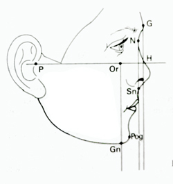

punkty i płaszczyzny pomiarowe
Do opisu morfologii zespołu twarzowo - szczękowego wykorzystuje się punkty skórne i kostne, nieparzyste - leżące w linii pośrodkowej ciała oraz punkty parzyste - rozłożone symetrycznie po obu stronach płaszczyzny pośrodkowej
Punkty pomiarowe (nieparzyste i parzyste)
- punkty nieparzyste
- Trichion (Tr) - punkt skórny w górnej części czoła/ granicą skóry owłosionej
- Ophryon (On) - punkt skórny na górnej granicy brwi / mniej więcej środek czoła
- Glabella (G) - punkt skórny i kostny najbardziej wysunięty do przodu (na czole)
- Nasion (N) - punkt skórny: największe zagłębienie nosowo - czołowe; punkt kostny: na szwie nosowo kostnym
- Spina Nasalis Interior (Sp) - punkt kostny na wierzchołku kolca nosowego przedniego
- Subnasale (Sn) - punkt skórny na przejściu przegrody skórnej nosa w wargę górną
- Subspinale (Ss)- pkt. kostny w największym zagłębieniu wyrostka zębodołowego, pod kolcem nosowym
- Labrale superius (Ls)pkt skórny na granicy skóry i czerwieni wargowej wargi górnej
- Prosthion (Pr) - pkt dziąsłowy i kostny pomiędzy siekaczami przyśrodkowymi szczęki na najniższej krawędzi wyrostka zębodołowego
- Incision superius (Is)pkt zębowy - brzegi sieczne siekaczy dolnych przyśrodkowych
- Stomion (St) - pkt skórny na styku dwóch czerwoni wargowych
- Incision inferious (Ii) - pkt zębowy - brzegi sieczne siekaczy dolnych przyśrodkowych
- Labrale inferious (Li) - pkt skórny na granicy skóry i czerwieni wargowej wargi dolnej
- Infradentale (Id) - pkt dziąsłowy i kostny pomiędzy siekaczami przyśrodkowymi żuchwy na najwyższej krawędzi zębodołowej żuchwy
- Supramentale (Sm) - pkt kostny - największe zagłębienie części zębodołowej żuchwy
- Pogonion (Pg) - pkt skórny i kostny najbardziej na przodzie bródki
- Gnathion (Gn) - pkt skórny i kostny położony najbardziej do dołu na krzywiźnie bródki
- Opistocranion (Op) - punkt skórny i kostny na tyle i dole kości potylicznej
- Punkty parzyste
- Orbitale (Or) - pkt skórne i kostne na środku dolnej krawędzi oczodołu
- Porion (Pr) - pkt kostne na górnych brzegach otworów słuchowych
- Zygion (Zy) - pkt skórne i kostne leżące najbardziej bocznie na łukach jarzmowych
- Gonion (Go) - pkt skórne i kostne najbardziej z tyłu i na dole kąta żuchwy
- Auriculare (Au)
- Tragion (T) - pkt skórne na górnych brzegach skrawka ucha
- Alare (Al) - pkt skórne najbardziej boczne na skrzydełkach nosa
- Chelion (Ch) - pkt skórne kątów ust
Płaszczyzny pomiarowe
W oparciu o normę Simona, który w 1922 r. określił normę dla harmonijnych rysów twarzy oraz rozwinął poszukiwania związków między nieprawidłowościami zgryzowymi , a ich wływem na zaburzenie rysów twarzy W swoich badaniach posłużył się płaszczyznami odniesienia odpowiadającymi kirunkom przestrzennym
Posługiwał się do tego metodą fotostatyki.
- Płaszczyna strzałkowa pośrodkowa
- przechodzi przez wszystkie punkty pośrodkowe: trichion, glabella, ophryon, nasion, subnasale, labrale superius, labrale inferius, supramentale, pogonion, gnathion
- Płaszczyzna frankfurcka horyzontalna (pozioma)
- przechodzi przez punkty orbitale i tragion
- Płaszczyna oczodołowa Simona
- przechodzi przez punkty orbitale i jest prostopadła w stosunku do pozostałych.
Pole biometryczne
Metoda fotostatyki została ulepszona w 1928r. przez A.M. Schwartza. Wykonywał on zdjęcia pacjenta w dwóch lustrach ustawionych pod kątem 90 ° - dzięki temu uzyskał zdjecie obydwu profili i zdjęcie en face jednocześnie.
W tym samym okresie wprowadzono nowe płaszczyzny służące do analizy rysów twarzy: Dreysus opracował płaszczyznę czołową przechodzącą przez punkt nasion i prostopadłą do frankfurckiej jako przednią granicę dla prawidłowych rysów; Kantorowicz i Izard wprowadzili płaszczyznę czołową przechodzącą przez punkt glabella. Przestrzeń zawartą pomiędzy tymi płaszczynami okresla się mianem pola biometrycznego
- Płaszczyzna czołowa Kantorowicza - Izarda
- przechodzi przez punkt glabella. Jest prostopadła do płaszczyzny frankfurckiej i stanowi Przednie ograniczenie pola biometrycznego. Jest stosowana po 7 roku życia (część mózgowa czaszki rozwija się szybciej niż część twarzowa, Czoło u dzieci młodszych jest bardziej uwypuklone - prawidłowy profil nie mieścił by się w granicach pola biometrycznego.
- Płaczczyna oczodołowa Simona
- przechodzi przez punkty orbitale i jest prostopadła do płaszczyny frankfurckiej i strzałkowej
- Płaszczyzna czołowa Dryfusa
- jest płaszczyną pomocniczą przechodzącą przez nasion. Stanowi przednie ograniczenie polabiometrycznego u dzieci poniżej 7 roku zycia